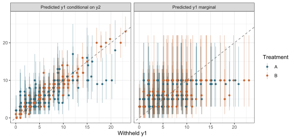

Partially paired designs
Source:vignettes/articles/partially-paired-designs.Rmd
partially-paired-designs.Rmd
library(brms)
library(bicountbrms)
library(posterior) # summaries of the posterior draws
library(dplyr) # data manipulation
library(ggplot2) # the figureIn a partially paired design, one source has missing values: source 2
records a count y_2 on every unit, and
source 1 records a count y_1 on only
some of the units. Interest usually lies in estimating the congruence
and the source bias (see Getting
started and The
congruence–bias parameterisation), and in imputing the missing
values of y_1 from all the information
available, including the recorded values of y_2. Here, we simulate a partially paired
design with two treatments and show how to obtain these estimates and
imputations from a model fitted with
binegbin_partialobs().
Structuring the data
The counts of the source that records every unit are the column
y2, and the counts of the other source are the column
y1. The observation indicator y1_obs is
1 on a paired row (where y_1 was recorded) and 0 on an
unpaired row (where y_1 is missing),
and is passed to the family with y_2 as
vint(y2, y1_obs), in that order. An indicator other than
0 or 1 makes the sampler fail at
initialisation, with a message in the chain output. The same check
catches the two arguments of vint() written in reverse
order. On an unpaired row, y1 can be any integer, because
the likelihood term for that row does not depend on y1. We
suggest -1, because it cannot be confused with a recorded
count. y1 must not be NA on an
unpaired row, because brms drops any row with a missing
response before the likelihood is evaluated.
Simulated design
The design has 10 groups, such as sites, and two treatments,
A and B, with 30 units for each combination of
group and treatment. The midpoint M
varies among groups. The congruence and the source bias differ between
treatments, with f = 0.6 and \beta = 0 under treatment A, and
f = 0.85 and \beta = 0.3 under treatment B,
so that under treatment B source 1 records more exclusive
events than source 2. Source 1 records y_1 on 18 of the 30 units (60%) in each
combination of group and treatment, and every simulated y_1 is kept in y1_true, against
which the imputation is checked.
set.seed(4)
# The midpoint M varies among the 10 groups: log M is normal with mean log(5)
# and SD 0.4.
groups <- data.frame(
group = factor(1:10),
logM = rnorm(10, log(5), 0.4)
)
# The congruence f and the source bias beta differ between the two treatments.
treatments <- data.frame(
treatment = factor(c("A", "B")),
f = c(0.6, 0.85),
beta = c(0, 0.3)
)
# 30 units for each combination of group and treatment, 600 units in all.
design <- merge(
merge(groups, treatments),
data.frame(unit = 1:30)
)
# The native parameters on each unit. Every overdispersion is 0.5.
dpars <- with(
design,
mfd_to_dpars(
M = exp(logM),
f = f,
delta = atanh(beta),
kappas = 0.5,
kappaxone = 0.5,
kappaxtwo = 0.5
)
)
# rbicount() draws y1, y2, and the latent counts Ns, N1, and N2 on each unit.
# Source 1 records y1 on 18 of the 30 units, chosen at random, in each
# combination of group and treatment. On the other units, y1 is missing, as in
# real data, and the simulated value is kept in y1_true.
dat <- cbind(design, do.call(rbicount, c(list(n = nrow(design)), dpars))) |>
group_by(group, treatment) |>
mutate(
y1_true = y1,
y1 = if_else(
sample(rep(c(TRUE, FALSE), times = c(18, 12))),
y1,
NA_integer_
)
) |>
ungroup() |>
as.data.frame()
head(dat, 10)
#> group logM treatment f beta unit y1 y2 Ns N1 N2 y1_true
#> 1 1 1.696140 A 0.6 0 1 NA 5 4 0 1 4
#> 2 2 1.392441 A 0.6 0 1 2 5 2 0 3 2
#> 3 3 1.965896 A 0.6 0 1 11 8 6 5 2 11
#> 4 4 1.847830 A 0.6 0 1 9 7 6 3 1 9
#> 5 5 2.263685 A 0.6 0 1 14 31 11 3 20 14
#> 6 6 1.885148 A 0.6 0 1 3 1 0 3 1 3
#> 7 7 1.096939 A 0.6 0 1 NA 3 3 1 0 4
#> 8 8 1.524180 A 0.6 0 1 9 3 3 6 0 9
#> 9 9 2.368054 A 0.6 0 1 13 11 10 3 1 13
#> 10 10 2.320183 A 0.6 0 1 NA 10 6 9 4 15The model
Before the fit, the observation indicator is added and the missing
values of y_1 are set to
-1, as described in Structuring the data:
# Add the indicator y1_obs, 1 where source 1 recorded y1, and set the missing
# values of y1 to -1, so that brms keeps those rows
dat <- dat |>
mutate(
y1_obs = as.integer(!is.na(y1)),
y1 = if_else(is.na(y1), -1L, y1)
)
# The number of paired (y1_obs = 1) and unpaired (y1_obs = 0) units in each
# treatment
count(dat, treatment, y1_obs)
#> treatment y1_obs n
#> 1 A 0 120
#> 2 A 1 180
#> 3 B 0 120
#> 4 B 1 180The model is written with bf_mfd() as in Getting
started. The response is y1 | vint(y2, y1_obs), and the
constructor and its Stan code are binegbin_partialobs() and
binegbin_partialobs_stanvars(). The formula for
logM includes a group-level effect of group,
and the formulae for logitf and delta include
treatment, with one coefficient for each treatment.
fit <- brm(
bf_mfd(
y1 | vint(y2, y1_obs), # the indicator y1_obs follows y2
logM ~ 1 + (1 | group), # M varies among groups
logitf ~ 0 + treatment, # one congruence for each treatment
delta ~ 0 + treatment, # one source bias for each treatment
kappas ~ 1,
kappaxone ~ 1,
kappaxtwo ~ 1
),
family = binegbin_partialobs(),
stanvars = binegbin_partialobs_stanvars(),
data = dat,
# The priors of Getting started, with a prior on the SD of the group-level
# effect on logM
prior = c(
prior(normal(1.5, 1), class = "b", nlpar = "logM"),
prior(normal(0, 1), class = "sd", nlpar = "logM"),
prior(normal(0, 1.5), class = "b", nlpar = "logitf"),
prior(normal(0, 0.5), class = "b", nlpar = "delta"),
prior(normal(0, 1), class = "b", nlpar = "kappas", lb = 0),
prior(normal(0, 1), class = "b", nlpar = "kappaxone", lb = 0),
prior(normal(0, 1), class = "b", nlpar = "kappaxtwo", lb = 0)
),
chains = 4,
cores = 4,
iter = 3000,
refresh = 0,
backend = "cmdstanr", # or "rstan"
seed = 1
)An unpaired row contributes the probability of y_2 alone, which does not depend on the
exclusive rate \lambda_1 or the
overdispersion \kappa_{x1} of source 1.
\lambda_1 and \kappa_{x1} are therefore identified by the
paired rows alone. The congruence and the source bias are functions of
\lambda_1, so neither can be estimated
without paired rows. Where paired rows are few, the priors on
logitf, delta, and kappaxone have
the most influence on the posterior.
Including the unpaired rows is valid if y_1 is missing at random given the model: whether source 1 recorded a unit may depend on y_2 and on the predictors, but not otherwise on y_1.
Where there is no reason to expect the two exclusive components to
differ in overdispersion, replacing kappaxone ~ 1 and
kappaxtwo ~ 1 with the single formula
kappax ~ 1 gives the two exclusive components one
overdispersion, which is informed by the unpaired rows as well as the
paired rows.
Recovery of the generating values
The table gives the posterior median and 95% credible interval of the congruence and the source bias under each treatment, the overdispersion of the exclusive component of source 1, and the SD of the group-level effect on \log M, with the values that generated the counts.
# The values that generated the counts
truth <- c(
f_A = 0.6,
f_B = 0.85,
beta_A = 0,
beta_B = 0.3,
kappaxone = 0.5,
sd_logM = 0.4
)
# Each parameter on its natural scale, summarised and compared with its true
# value
recovery <- as_draws_df(fit) |>
mutate_variables(
f_A = plogis(b_logitf_treatmentA),
f_B = plogis(b_logitf_treatmentB),
beta_A = tanh(b_delta_treatmentA),
beta_B = tanh(b_delta_treatmentB),
kappaxone = b_kappaxone_Intercept,
sd_logM = sd_group__logM_Intercept
) |>
subset_draws(variable = names(truth)) |>
summarise_draws(
est = median,
~ quantile2(.x, probs = c(0.025, 0.975))
) |>
mutate(
truth = truth[variable],
covered = truth >= q2.5 & truth <= q97.5
)
knitr::kable(recovery, digits = 2)| variable | est | q2.5 | q97.5 | truth | covered |
|---|---|---|---|---|---|
| f_A | 0.58 | 0.49 | 0.66 | 0.60 | TRUE |
| f_B | 0.84 | 0.80 | 0.87 | 0.85 | TRUE |
| beta_A | -0.02 | -0.10 | 0.06 | 0.00 | TRUE |
| beta_B | 0.31 | 0.20 | 0.43 | 0.30 | TRUE |
| kappaxone | 0.49 | 0.30 | 0.67 | 0.50 | TRUE |
| sd_logM | 0.45 | 0.29 | 0.82 | 0.40 | TRUE |
All six 95% intervals contain the true value.
Imputation of the missing values
posterior_predict_y1_given_y2() draws y_1 on each row from its distribution given
the recorded y_2, once for each
posterior draw. posterior_predict() draws y_1 from its marginal distribution, which
depends on the predictors alone. The two predictions are compared below
with the values of y_1 withheld from
the model on the unpaired units.
# Draws of y1 given y2, and marginal draws of y1: one row per posterior draw and
# one column per unit
y1_given_y2 <- posterior_predict_y1_given_y2(fit)
y1_marginal <- posterior_predict(fit)
# The unpaired units, on which y1 was withheld from the model
unpaired <- which(dat$y1_obs == 0)
# The posterior median and 90% interval of a prediction on each unpaired unit
summarise_prediction <- function(draws, prediction) {
data.frame(
dat[unpaired, c("treatment", "y1_true")],
prediction = prediction,
est = apply(draws[, unpaired], 2, median),
q5 = apply(draws[, unpaired], 2, quantile, 0.05),
q95 = apply(draws[, unpaired], 2, quantile, 0.95)
)
}
imputed <- rbind(
summarise_prediction(y1_given_y2, "given y2"),
summarise_prediction(y1_marginal, "marginal")
)
# The root mean square error of the posterior median, the mean width of the 90%
# interval, and the proportion of withheld values inside the interval
imputation_summary <- imputed |>
summarise(
rmse = sqrt(mean((est - y1_true)^2)),
width = mean(q95 - q5),
coverage = mean(y1_true >= q5 & y1_true <= q95),
.by = c(treatment, prediction)
) |>
arrange(treatment, prediction)
knitr::kable(imputation_summary, digits = 2)| treatment | prediction | rmse | width | coverage |
|---|---|---|---|---|
| A | given y2 | 3.00 | 8.86 | 0.90 |
| A | marginal | 3.79 | 11.90 | 0.92 |
| B | given y2 | 1.57 | 5.28 | 0.98 |
| B | marginal | 4.16 | 13.35 | 0.94 |
imputed |>
ggplot() +
aes(
x = y1_true,
y = est,
ymin = q5,
ymax = q95,
colour = treatment
) +
geom_abline(
slope = 1,
intercept = 0,
linetype = 2,
colour = "grey50"
) +
geom_linerange(
position = position_jitter(width = 0.25, height = 0, seed = 1),
alpha = 0.35
) +
geom_point(
position = position_jitter(width = 0.25, height = 0, seed = 1),
size = 1.2
) +
facet_wrap(
~ prediction,
labeller = as_labeller(
c(
"given y2" = "Predicted y1 conditional on y2",
"marginal" = "Predicted y1 marginal"
)
)
) +
scale_colour_manual(values = c(A = "#2D6A7F", B = "#C4622D")) +
labs(
x = "Withheld y1",
y = NULL,
colour = "Treatment"
) +
theme_bw()
Predictions of y_1 on the 240 unpaired units against the values of y_1 withheld from the model, given the recorded y_2 (left) and from the marginal distribution of y_1 (right). Each point is the posterior median of the prediction for one unit, and each vertical line its 90% interval. The points are jittered horizontally, because the withheld values are integers. The dashed line marks equality of the prediction and the withheld value.
The root mean square error of the posterior median of y_1 was smaller for the prediction given
y_2 than for the marginal prediction:
3.0 against 3.8 under treatment A, and 1.6 against 4.2
under treatment B. The 90% intervals of the prediction
given y_2 were also narrower than the
90% intervals of the marginal prediction, with a mean width of 8.9
against 11.9 under treatment A, and 5.3 against 13.3 under
treatment B. The advantage of the prediction given y_2, in root mean square error and in
interval width, is larger under treatment B, where the
congruence is higher. The predictions given y_2 are pulled towards the mean of y_1 for each group and treatment, because the
exclusive count of source 1 is independent of y_2.
Checks on the paired rows
On an unpaired row, y1 is not a recorded count.
pp_check(), bayes_R2(), and
loo_R2() compare predictions with y1, so for a
partially paired fit, these three functions should be run with
newdata restricted to the paired rows, as in
pp_check(fit, newdata = subset(dat, y1_obs == 1)).
loo() needs no such restriction, because the likelihood
term for an unpaired row does not depend on y1. Prediction
and imputation describes the prediction functions and the brms
functions for post-processing.